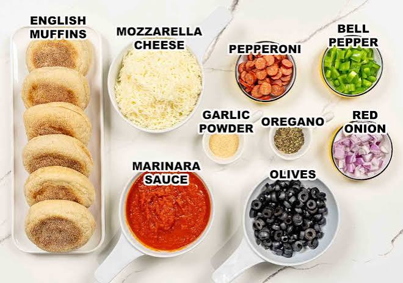

English Muffin Pizzas
Description
Whole wheat English muffins are split, spread with the pizza sauce of your choice (tomato? pesto? alfredo? It’s all fair game here), then smothered in cheese and any of your favorite pizza toppings, English Muffin Pizza is an easy, healthy, and highly personalizable dinner.
This English muffin pizza recipe is very fast and kid-friendly—they can make them with pizza sauce, cheese, and their choice of topping, and all you have to do is bake them!
ingredients

- 4 English muffins, split
- 1/2 cup canned pizza sauce
- 2 cups shredded mozzarella cheese
- 16 slices pepperoni sausage
Steps
- Gather all ingredients. Preheat the oven to 375 degrees F (190 degrees C).
- Arrange the English muffin halves cut-side up on a baking sheet.
- Spread pizza sauce evenly on top of each one.
- Sprinkle with mozzarella cheese and top with pepperoni slices
- Bake in the preheated oven until cheese is melted and browned on the edges, about 10 minutes.
Home